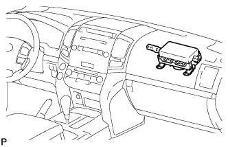
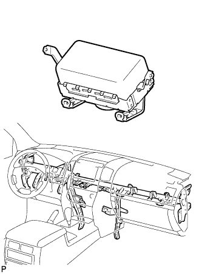

FRONT PASSENGER AIRBAG ASSEMBLY > ON-VEHICLE INSPECTION |
| 1. CHECK FRONT PASSENGER AIRBAG ASSEMBLY (VEHICLE NOT INVOLVED IN COLLISION) |
 |
Perform a diagnostic system check (Click here).
With the front passenger airbag installed on the vehicle, perform a visual check. If there are any defects as mentioned below, replace the instrument panel with a new one:
Cuts, minute cracks or marked discoloration on the instrument panel around the front passenger airbag.
| 2. CHECK FRONT PASSENGER AIRBAG ASSEMBLY (VEHICLE INVOLVED IN COLLISION AND AIRBAG HAS NOT DEPLOYED) |
 |
Perform a diagnostic system check (Click here).
With the front passenger airbag removed from the vehicle, perform a visual check. If there are any defects as mentioned below, replace the front passenger airbag, instrument panel or instrument panel reinforcement with a new one: